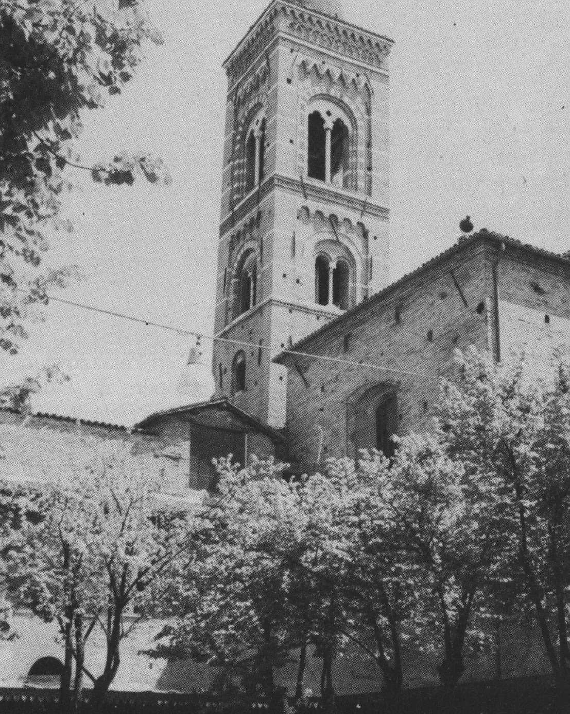
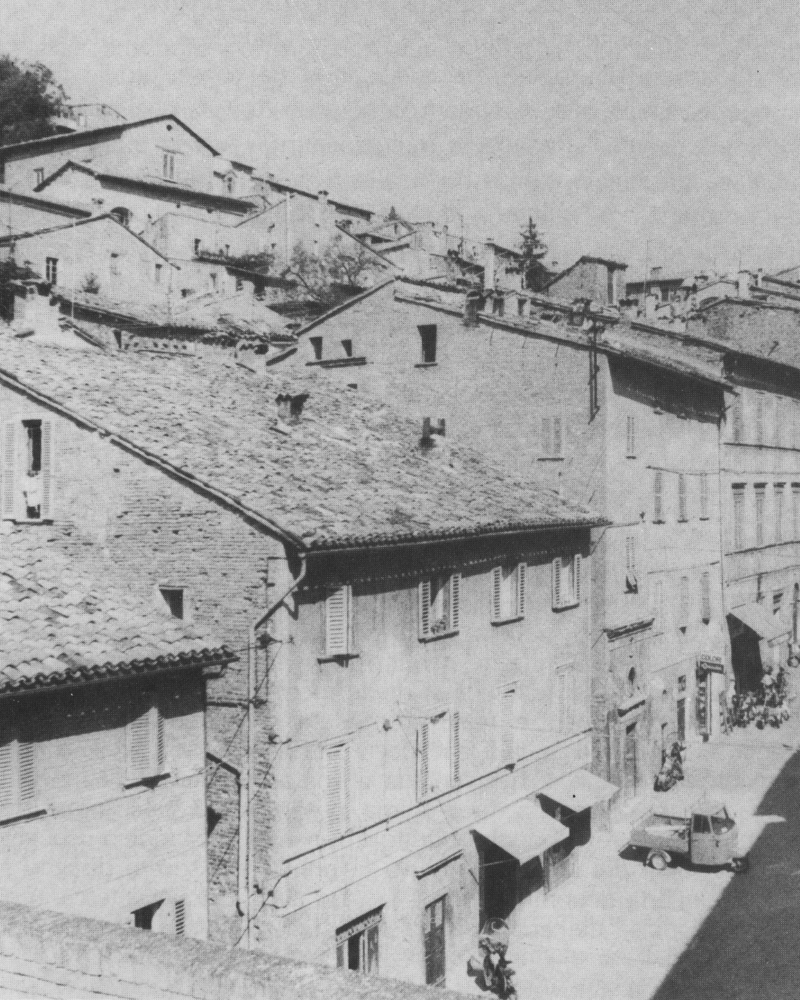
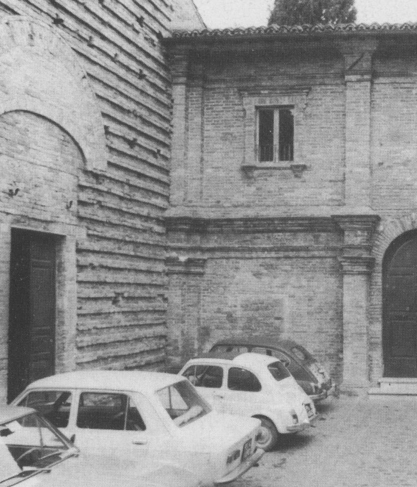
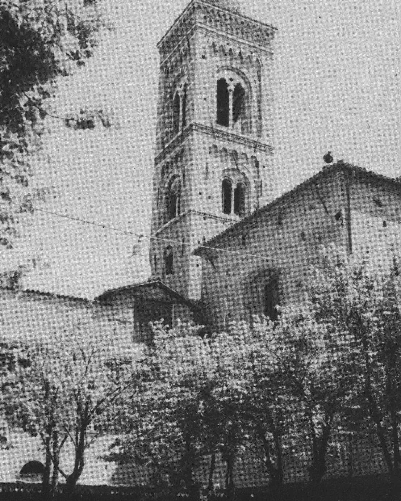
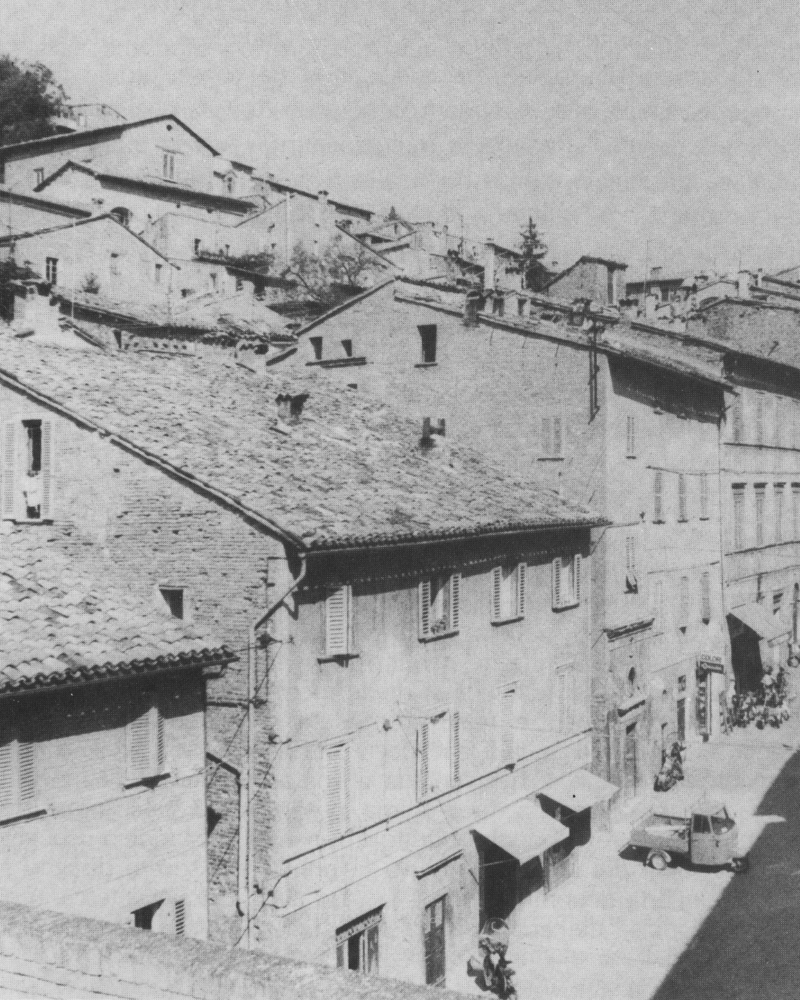
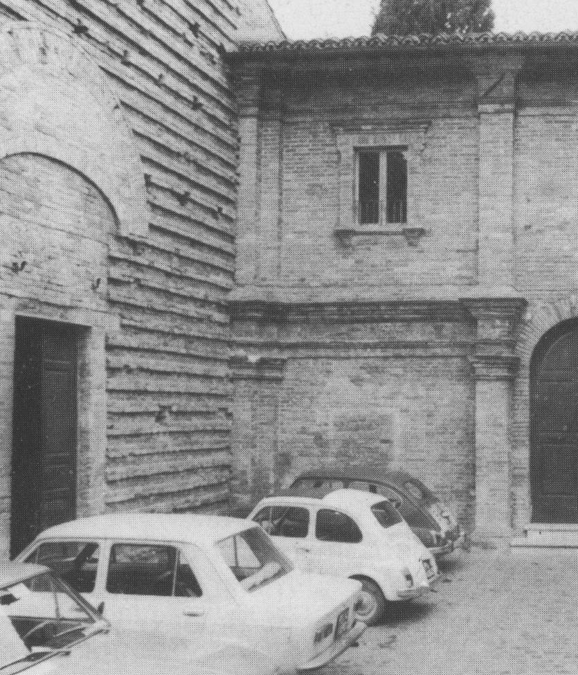
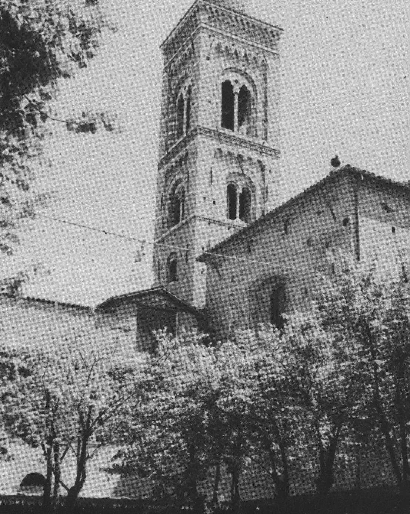
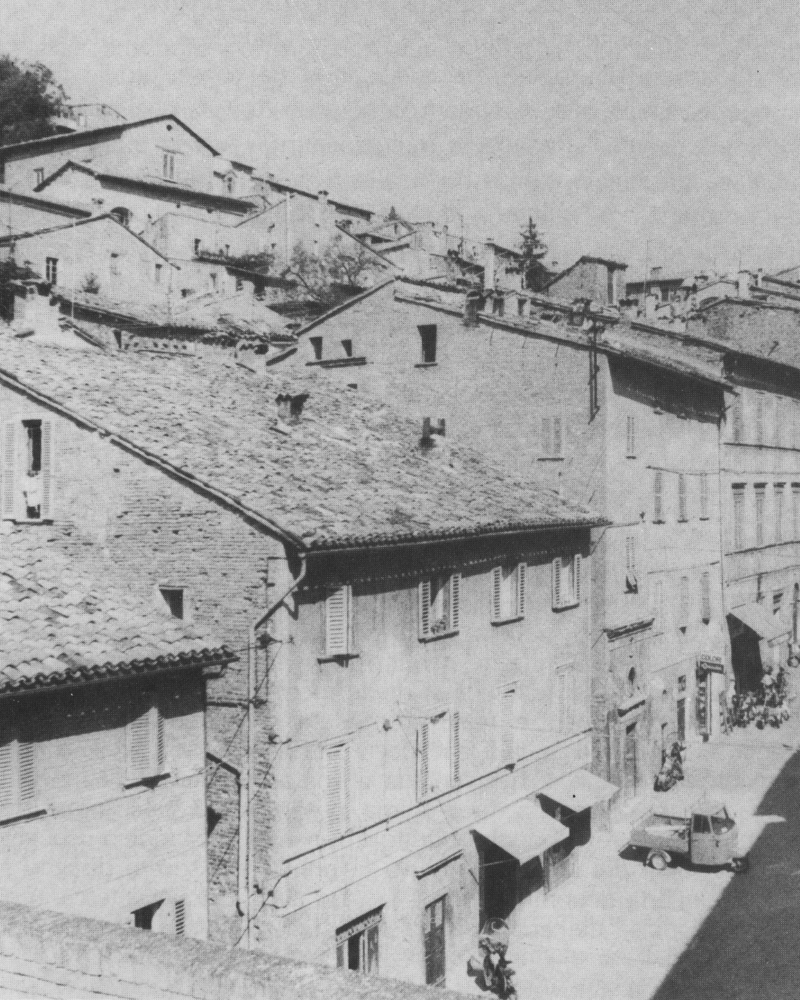
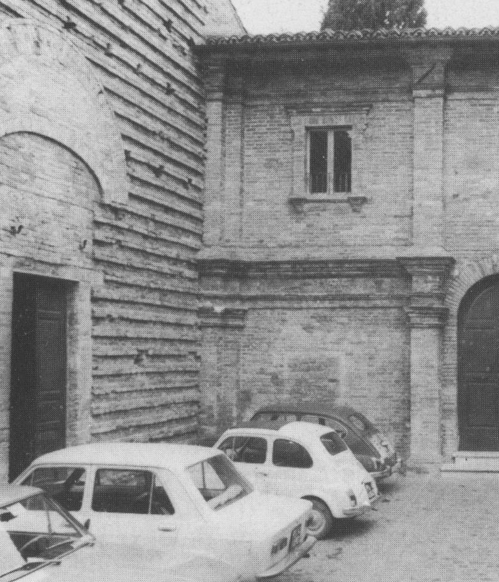
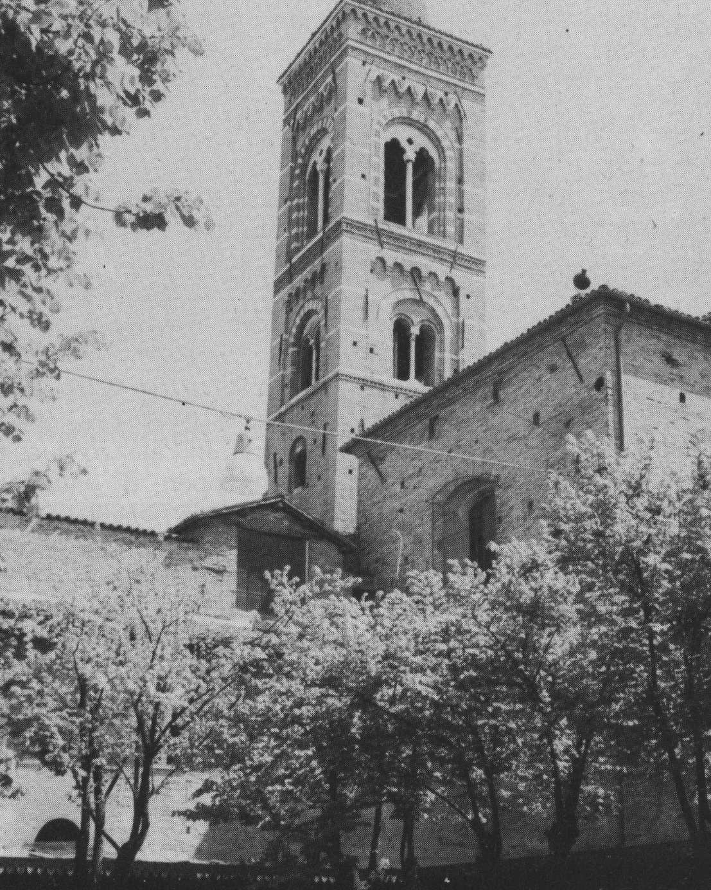
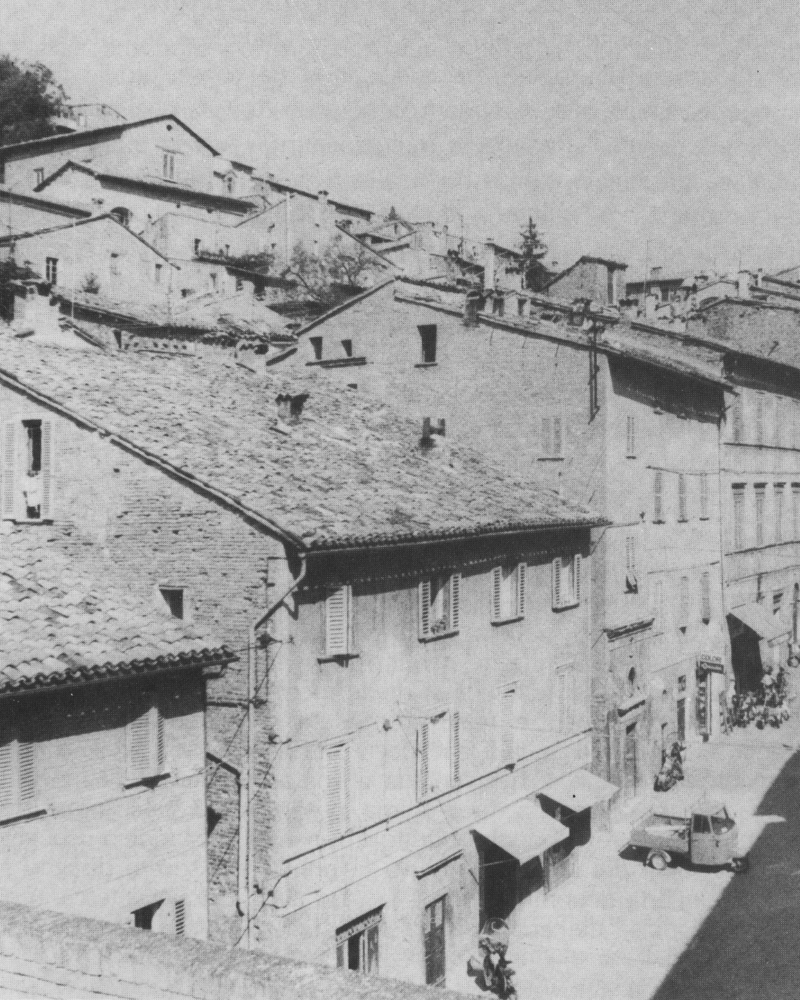
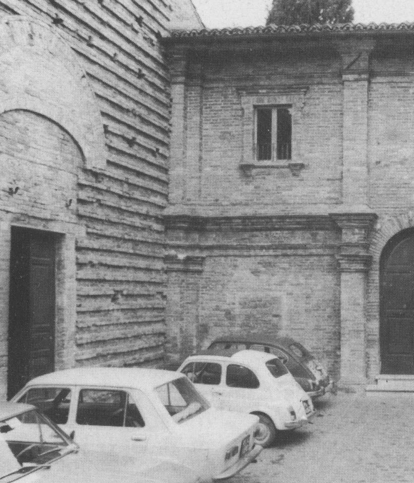
Istruzioni:
-Condividere l'utilizzo della videocamera con la pagina internet
-Rimanere dentro gli appositi segni sul terreno
-Posizionare correttamente la videocamera per una corretta visualizzazione dell'immagine nell'ambiente
(si consiglia un'inquadratura orizzontale)
Buon divertimento.